We sent cake. Here's why.
Topaz enhancement models eat GPU and move a lot of pixels. We build the compute they run on, and the private path the media travels.
Book 20 minutes with HenryLayer 01
Megaport and Latitude, one company. Latitude runs dedicated GPU and CPU bare metal in 25 locations. Megaport runs the private network fabric between that compute, your clouds, and your storage.
Layer 02
Dedicated GPU capacity for render and API jobs. A private route between the media sitting in storage and the GPUs waiting on it. Fewer public hops, fewer idle GPUs, a cost per render you can forecast.
Layer 03
Teams already running on us:

Shinami cut compute cost 79% and egress to zero.
Layer 04
Our hypothesis: a dedicated GPU pool for the heaviest enhancement jobs, fast flash beside it for the active working set, and a private Megaport connection to wherever the rest of the media lives.The whole stack, not just the frosting.
Worth twenty minutes to find out if we're right?
Book 20 minutes with HenryHenry Barton
Latitude Specialist
Megaport